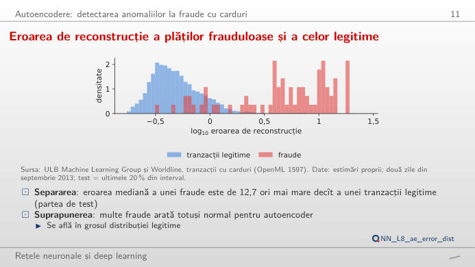
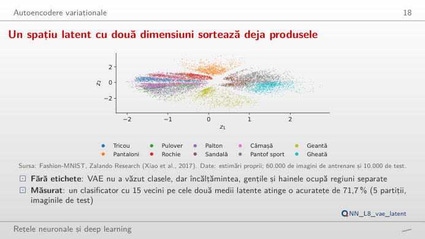
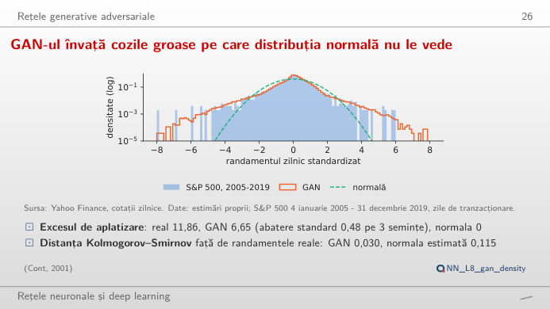
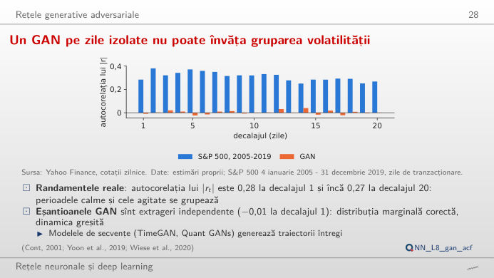
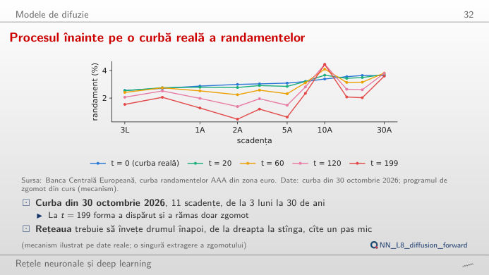
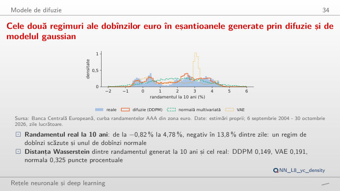

Patru familii de modele generative, fiecare pe date reale: autoencoderul (AE), autoencoderul variațional (VAE), rețeaua generativă adversarială (GAN) și modelul probabilistic de difuzie cu eliminarea zgomotului (DDPM). În stînga este slide-ul din curs, în dreapta aceeași figură, recalculată în browser din rezultatele cursului cînd modificați un control. Butonul ▶ modifică parametrul principal pas cu pas. Sub fiecare figură: o sinteză numerică, o întrebare pentru sală și Quantlet-ul cu codul figurii.
Autoencodere: detectarea anomaliilor la fraudele cu carduri · Autoencodere variaționale · Rețele generative adversariale · Modele de difuzie
Autoencodere: detectarea anomaliilor la fraudele cu carduri
Fraudele sînt greu de reconstruit: eroarea lor de reconstrucție este mult mai mare

Răspuns
La 0,1%, autoencoderul găsește 8 fraude (recall 10,7%), analiza componentelor principale (PCA) nu găsește niciuna, iar regresia logistică, care a văzut fraude etichetate, găsește 48 (64,0%). La 1% (572 de alerte), cele trei găsesc 56, 50 și 65 de fraude: cu un buget mai larg, diferența dintre scoruri se reduce, dar precizia scade (9,7% pentru autoencoder), pentru că tranzacțiile legitime sînt de cîteva sute de ori mai numeroase decît fraudele. Autoencoderul nu are nevoie de etichete, deci este un detector al necunoscutului, care completează modelul supervizat, nu îl înlocuiește.
Autoencodere variaționale
Un spațiu latent cu două dimensiuni sortează deja produsele

Răspuns
Încălțămintea ocupă partea dreaptă a hărții: în jurul punctului (1,5; 1,5), 94% dintre cele mai apropiate 50 de imagini de test sînt pantofi sport, în jurul punctului (1,5; −1,5) 98% sînt ghete; în jurul punctului (0; 2,1) sînt pantaloni, iar în jurul punctului (0,9; −2,1) genți. Mutați z₂ de la 1,5 la −1,5 cu z₁ = 1,5: desenul trece treptat de la pantof sport la gheată. Termenul Kullback–Leibler (KL) din marginea inferioară a evidenței (ELBO) ține codurile aproape de o normală standard, deci punctele apropiate se decodează în imagini asemănătoare și orice punct se decodează în ceva plauzibil. În jurul punctului (0; 0) cămășile și tricourile se suprapun, de aceea desenul de acolo este neclar.
Rețele generative adversariale
GAN-ul învață cozile groase pe care distribuția normală nu le vede

Răspuns
La 1%, cuantila istorică este −3,48%, GAN-ul (sămînța 1) dă −3,52%, iar normala doar −2,67%. În 2020–2026, primele două sînt depășite în cîte 19 zile (1,11%), normala în 41 de zile (2,39%): subestimează coada, pentru că randamentele zilnice au cozi groase (exces de kurtosis 11,86 în 2005–2019). La 5%, cele trei cuantile se apropie (−1,78%, −1,69%, −1,88%): diferențele sînt în coada îndepărtată. Sînt cuantile necondiționate: niciuna nu reacționează la nivelul volatilității.
Un GAN pe zile izolate nu poate învăța gruparea volatilității

Răspuns
Nu. Autocorelația lui |r| este 0,28 la decalajul 1 în 2005–2019 și rămîne în jur de 0,3 timp de 20 de zile (media pe decalajele 1–20: 0,31); pentru eșantioanele GAN este −0,01 la decalajul 1 și aproape zero la orice decalaj. Generatorul extrage fiecare zi independent, deci poate învăța distribuția unei zile, cu cozile ei groase, dar nu dependența dintre zile. Randamentele cu semn r nu au aproape deloc autocorelație în niciuna dintre serii: volatilitatea, nu direcția, este previzibilă. Pentru gruparea volatilității este nevoie de un model de secvențe (un GAN recurent sau convoluțional pe ferestre de zile).
Modele de difuzie
Procesul înainte pe o curbă reală a randamentelor

Răspuns
De la t = 117, unde ᾱ_t scade sub 0,5 (√ᾱ_t = √(1 − ᾱ_t) ≈ 0,71). La t = 20 curba este aproape intactă (ᾱ = 0,977), la t = 60 ᾱ = 0,827, iar la ultimul pas, t = 199, ᾱ = 0,132: cu programul liniar din curs (β de la 0,0001 la 0,02 în 200 de pași) supraviețuiesc circa 36% din amplitudinea semnalului. Rețeaua de eliminare a zgomotului învață să refacă acești pași, prezicînd zgomotul ε adăugat; generarea pornește de la zgomot pur și îi parcurge invers.
Difuzia reproduce cele două regimuri ale dobînzilor euro; distribuția normală nu poate

Răspuns
Cu pragul la 0 pentru pantă: DDPM (sămînța 1) dă 10,5% curbe inversate, normala multivariată 14,2%, iar VAE-ul cu doi factori doar 0,3%. Normala pune scenarii și acolo unde curbele reale nu au fost niciodată (vedeți diagrama de dispersie: umple spațiul dintre regimul dobînzilor mari de dinainte de 2012 și regimul dobînzilor negative din 2015–2021). Treceți la randamentul la 10 ani, cu pragul 0: 13,8% dintre zilele reale au randament negativ, față de 9,9% pentru DDPM, 9,3% pentru normală și 11,2% pentru VAE. Difuzia păstrează ambele regimuri și relația curbă dintre nivel și pantă; normala le netezește într-unul singur.
Fraude cu carduri: ULB Machine Learning Group și Worldline (OpenML 1597), două zile din septembrie 2013, test = ultimele 20% din interval, tranzacțiile legitime ponderate la totalul datelor. Imagini: Fashion-MNIST, Zalando Research (Xiao et al., 2017), 10.000 de imagini de test. Randamente: prețurile zilnice de închidere ale S&P 500, Yahoo Finance, antrenare 4 ianuarie 2005 – 31 decembrie 2019, test 2 ianuarie 2020 – 30 octombrie 2026. Curbele randamentelor: Banca Centrală Europeană (BCE), obligațiuni guvernamentale AAA din zona euro, 6 septembrie 2004 – 30 octombrie 2026, zile lucrătoare. Rezultatele modelelor: estimări proprii din curs (analysis_L8.py).